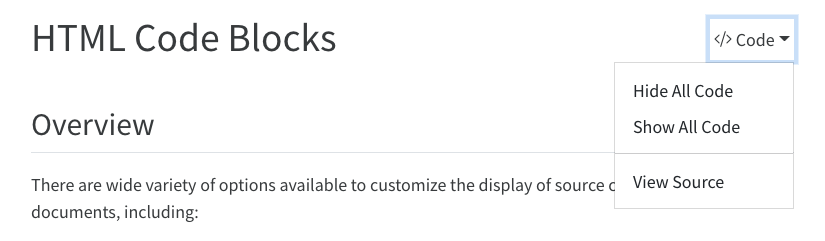

There are wide variety of options available to customize the display of source code within HTML documents, including:
Hiding some or all code that was executed by Knitr or Jupyter.
Code folding for executed code (hidden by default and expandable by readers).
Handling code that overflows the available horizontal display space.
View the source code of the markdown file used to generate the document.
Syntax highlighting themes and other options to control the appearance of code.
Copy to clipboard button for code blocks.
Generating hyperlinks to online documentation for functions used within code blocks via the downlit package (note that this option currently only works when using the Knitr engine).
Details on using all of these options are provided below.
Hiding Code
For many documents you may want to hide all of the executable source code used to produce dynamic outputs. You can do this by specifying echo: false in the document execute options. For example:
Note that we can override this option on a per code-block basis. For example:
```{python}#| echo: trueimport matplotlib.pyplot as pltplt.plot([1,2,3,4])plt.show()```
Code block options are included in a special comment at the top of the block (lines at the top prefaced with #| are considered options).
Folding Code
Use the code-fold option to include code but have it hidden by default using the HTML <details> tag. For example, click the Code button to see the code that produced this plot.
Here we specify both code-fold: true as well as custom summary text (the default is just “Code” as shown above):
format:html:code-fold:truecode-summary:"Show the code"
Valid values for code-fold include:
Value
Behavior
false
No folding (default)
true
Fold code (initially hidden)
show
Fold code (initially shown)
Use the code-fold and code-summary chunk attributes to control this on a chunk-by-chunk basis:
```{r}#| code-fold: true#| code-summary: "Show the code"```
Code Overflow
In some cases the width of source code will overflow the available horizontal display space. By default, this will result in a horizontal scroll bar for the code block. However if you prefer not to have scrollbars you can have the longer lines wrap instead.
To set the global default behavior use the code-overflow option. For example:
format:html:code-overflow: wrap
Valid values for code-overflow are:
Option
Description
scroll
Scroll code blocks that exceed available width (default, corresponds to white-space: pre).
wrap
Wrap lines of code that exceed available width (corresponds to white-space: pre-wrap).
You can also override the global default on a per-code-block basis. For computational cells you do this with the code-overflow cell option:
```{python}#| code-overflow: wrap# very long line of code....```
For a static code block, add the .code-overflow-scroll or .code-overflow-wrap CSS class:
```{.python .code-overflow-wrap}# very long line of code....```
Note that irrespective of these options, code will always wrap within printed HTML output (as it would otherwise be clipped off the edge of the page).
Code Tools
You can include a Code menu in the header of your document that provides various tools for readers to interact with the source code. Specify code-tools: true to activate these tools:
format:html:code-fold:truecode-tools:true
If you have a document that includes folded code blocks then the Code menu will present options to show and hide the folded code as well as view the full source code of the document:

This document specifies code-tools: true in its options so you should see the Code menu above next to the main header.
You can control which of these options are made available as well as the “Code” caption text using sub-options of code-tools. For example, here we specify that we want only “View Source” (no toggling of code visibility) and no caption on the code menu:
If you are within a project and have specified a repo-url option then you can just use repo and the correct link to your source file will be generated:
format:html:code-tools:source: repo
Note that the code-tools option is not available when you disable the standard HTML theme (e.g. if you specify the theme: none option).
Appearance
By default code blocks are rendered with a left border whose color is derived from the current theme. You can customize code chunk appearance with some simple options that control the background color and left border. Options can either be booleans to enable or disable the treatment or can be legal CSS color strings (or they could even be SASS variable names!).
Here is the default appearance for code blocks (code-block-background: true):
You can instead use a left border treatment using the code-block-border-left option:
code-block-border-left:true
You can combine a background and border treatment as well as customize the left border color:
You can specify the code highlighting style using highlight-style and specifying one of the supported themes. These themes are “adaptive”, which means they will automatically switch between a dark and light mode based upon the theme of the website. These are designed to work well with sites that include a dark and light mode.
a11y
arrow
atom-one
ayu
breeze
github
gruvbox
All of the standard Pandoc themes are also available:
pygments
tango
espresso
zenburn
kate
monochrome
breezedark
haddock
As well as an additional set of extended themes, including:
dracula
mokokai
nord
oblivion
printing
radical
solarized
vim-dark
The highlight-style option determines which theme is used. For example:
highlight-style: github
Highlighting themes can provide either a single highlighting definition or two definitions, one optimized for a light colored background and another optimized for a dark color background. When available, Quarto will automatically select the appropriate style based upon the code chunk background color’s darkness. Users may always opt to specify the full name (e.g. atom-one-dark) to by pass this automatic behavior.
By default, code is highlighted using the arrow theme, which optimized for accessibility. We’ve additionally introduced the arrow-dark theme which is designed to provide accessible highlighting against dark backgrounds.
Examples of the light and dark themes:
Arrow (light)
Arrow (dark)
Ayu (light)
Ayu (dark)
Custom Highlighting
In addition to the built in themes available for syntax highlighting, you can also specify your own syntax highlighting by providing the path to a valid theme file (which is based upon the KDE XML syntax highlighting descriptions). Highlighting is implemented using skylighting.
For example:
---highlight-style: custom.theme---
In addition, if you’d like to provide adaptive themes, you may also pass both a light and dark theme file:
---highlight-style: pygments
Copy Button
Hover over the code block below and you will see a copy icon in the top-right corner:
library(dygraphs)dygraph(nhtemp, main ="New Haven Temperatures") %>%dyRangeSelector(dateWindow =c("1920-01-01", "1960-01-01"))
This behavior is enabled by default but you configure it using the code-copy option:
format:html:code-copy:false
Valid values for code-copy include:
hover
Show button on hover (default)
true
Always show code copy button
false
Never show code copy button
Code Linking
The code-link option enables hyper-linking of functions within code blocks to their online documentation:
format:html:code-link:true
Code linking is currently implemented only for the knitr engine (via the downlit package).
Source Code
---title: "HTML Code Blocks"format: html: code-tools: trueexecute: warning: false---## OverviewThere are wide variety of options available to customize the display of source code within HTML documents, including:1. Hiding some or all code that was executed by [Knitr](https://yihui.name/knitr) or [Jupyter](https://jupyter.org).2. Code folding for executed code (hidden by default and expandable by readers).3. Handling code that overflows the available horizontal display space.4. View the source code of the markdown file used to generate the document.5. Syntax highlighting themes and other options to control the appearance of code.6. Copy to clipboard button for code blocks.7. Generating hyperlinks to online documentation for functions used within code blocks via the [downlit](https://downlit.r-lib.org/) package (note that this option currently only works when using the Knitr engine).Details on using all of these options are provided below.## Hiding CodeFor many documents you may want to hide all of the executable source code used to produce dynamic outputs. You can do this by specifying `echo: false` in the document `execute` options. For example:``` yaml---title:"My Document"execute:echo:falsejupyter: python3---```Note that we can override this option on a per code-block basis. For example:``` {{python}}#| echo: trueimport matplotlib.pyplot as pltplt.plot([1,2,3,4])plt.show()```Code block options are included in a special comment at the top of the block (lines at the top prefaced with `#|` are considered options).## Folding CodeUse the `code-fold` option to include code but have it hidden by default using the HTML `<details>` tag. For example, click the **Code** button to see the code that produced this plot.```{r}#| code-fold: truelibrary(ggplot2)dat <-data.frame(cond =rep(c("A", "B"), each=10),xvar =1:20+rnorm(20,sd=3),yvar =1:20+rnorm(20,sd=3))ggplot(dat, aes(x=xvar, y=yvar)) +geom_point(shape=1) +geom_smooth() ```Here we specify both `code-fold: true` as well as custom summary text (the default is just "Code" as shown above):``` yamlformat:html:code-fold:truecode-summary:"Show the code"```Valid values for `code-fold` include:| Value | Behavior ||---------|------------------------------|| `false` | No folding (default) || `true` | Fold code (initially hidden) || `show` | Fold code (initially shown) |Use the `code-fold` and `code-summary` chunk attributes to control this on a chunk-by-chunk basis:``` {{r}}#| code-fold: true#| code-summary: "Show the code"```## Code OverflowIn some cases the width of source code will overflow the available horizontal display space. By default, this will result in a horizontal scroll bar for the code block. However if you prefer not to have scrollbars you can have the longer lines wrap instead.To set the global default behavior use the `code-overflow` option. For example:``` yamlformat:html:code-overflow: wrap```Valid values for `code-overflow` are:| Option | Description ||----------|----------------------------------------------------------------------------------------------|| `scroll` | Scroll code blocks that exceed available width (default, corresponds to `white-space: pre`). || `wrap` | Wrap lines of code that exceed available width (corresponds to `white-space: pre-wrap`). |You can also override the global default on a per-code-block basis. For computational cells you do this with the `code-overflow` cell option:``` {{python}}#| code-overflow: wrap# very long line of code....```For a static code block, add the `.code-overflow-scroll` or `.code-overflow-wrap` CSS class:```` python```{.python .code-overflow-wrap}# very long line of code....```````Note that irrespective of these options, code will always wrap within printed HTML output (as it would otherwise be clipped off the edge of the page).## Code ToolsYou can include a **Code** menu in the header of your document that provides various tools for readers to interact with the source code. Specify `code-tools: true` to activate these tools:``` yamlformat:html:code-fold:truecode-tools:true```If you have a document that includes folded code blocks then the **Code** menu will present options to show and hide the folded code as well as view the full source code of the document:{.border fig-alt="A screen shot of the header of a rendered Quarto document showing the result of setting both the code-fold and code-tools option to true. There is a drop-down menu labeled 'Code' to the right of the page title with a triangle pointing down. The menu is open and there are three options listed vertically beneath it: 'Hide All Code,' 'Show All Code,' and 'View Source.'"}This document specifies `code-tools: true` in its options so you should see the **Code** menu above next to the main header.You can control which of these options are made available as well as the "Code" caption text using sub-options of `code-tools`. For example, here we specify that we want only "View Source" (no toggling of code visibility) and no caption on the code menu:``` yamlformat:html:code-tools:source:truetoggle:falsecaption: none```By default, the source code is embedded in the document and shown in a popup window like this:{fig-alt="A screenshot of this webpage with a pop-up window labeled 'Source Code' over it. This 'Source Code' window contains the raw markdown and R code used to write this page. There is an 'X' on the upper right corner of the 'Source Code' pop up to close it."}You can alternatively specify a URL for the value of `source`:``` yamlformat:html:code-tools:source: https://github.com/quarto-dev/quarto-web/blob/main/index.md```If you are within a project and have specified a `repo-url` option then you can just use `repo` and the correct link to your source file will be generated:``` yamlformat:html:code-tools:source: repo```Note that the `code-tools` option is not available when you disable the standard HTML theme (e.g. if you specify the `theme: none` option).## AppearanceBy default code blocks are rendered with a left border whose color is derived from the current theme. You can customize code chunk appearance with some simple options that control the background color and left border. Options can either be booleans to enable or disable the treatment or can be legal CSS color strings (or they could even be SASS variable names!).Here is the default appearance for code blocks (`code-block-background: true`):{fig-alt="A block of code with a gray background."}You can instead use a left border treatment using the `code-block-border-left` option:``` yamlcode-block-border-left:true```{fig-alt="A block of code with a gray vertical stripe running along its left border. This code block has no background."}You can combine a background and border treatment as well as customize the left border color:``` yamlcode-block-bg:truecode-block-border-left:"#31BAE9"```{fig-alt="A block of code with a gray background and a blue vertical stripe running along its left border."}## HighlightingYou can specify the code highlighting style using `highlight-style` and specifying one of the supported themes. These themes are "adaptive", which means they will automatically switch between a dark and light mode based upon the theme of the website. These are designed to work well with sites that include a dark and light mode.- a11y- arrow- atom-one- ayu- breeze- github- gruvboxAll of the standard Pandoc themes are also available:- pygments- tango- espresso- zenburn- kate- monochrome- breezedark- haddockAs well as an additional set of extended themes, including:- dracula- mokokai- nord- oblivion- printing- radical- solarized- vim-darkThe `highlight-style` option determines which theme is used. For example:``` yamlhighlight-style: github```Highlighting themes can provide either a single highlighting definition or two definitions, one optimized for a light colored background and another optimized for a dark color background. When available, Quarto will automatically select the appropriate style based upon the code chunk background color's darkness. Users may always opt to specify the full name (e.g. `atom-one-dark`) to by pass this automatic behavior.By default, code is highlighted using the `arrow` theme, which optimized for accessibility. We've additionally introduced the `arrow-dark` theme which is designed to provide accessible highlighting against dark backgrounds.Examples of the light and dark themes:#### Arrow (light){fig.alt="A block of code showcasing the Arrow (light) theme."}#### Arrow (dark){fig.alt="A block of code showcasing the Arrow (dark) theme."}#### Ayu (light){fig.alt="A block of code showcasing the Ayu (light) theme."}#### Ayu (dark){.preview-image fig.alt="A block of code showcasing the Ayu (dark) theme."}### Custom HighlightingIn addition to the built in themes available for syntax highlighting, you can also specify your own syntax highlighting by providing the path to a valid theme file (which is based upon the KDE XML syntax highlighting descriptions). Highlighting is implemented using [skylighting](https://github.com/jgm/skylighting).For example:``` yaml---highlight-style: custom.theme---```In addition, if you'd like to provide adaptive themes, you may also pass both a light and dark theme file:``` yaml---highlight-style: pygments```## Copy ButtonHover over the code block below and you will see a copy icon in the top-right corner:```{r eval=FALSE}library(dygraphs)dygraph(nhtemp, main ="New Haven Temperatures") %>%dyRangeSelector(dateWindow =c("1920-01-01", "1960-01-01"))```This behavior is enabled by default but you configure it using the `code-copy` option:``` yamlformat:html:code-copy:false```Valid values for `code-copy` include:| | ||---------|--------------------------------|| `hover` | Show button on hover (default) || `true` | Always show code copy button || `false` | Never show code copy button |## Code LinkingThe `code-link` option enables hyper-linking of functions within code blocks to their online documentation:``` yamlformat:html:code-link:true```Code linking is currently implemented only for the knitr engine (via the [downlit](https://downlit.r-lib.org) package).